How do parents’ P and grandparents’ G educational attainment influence educational attainment of children C?
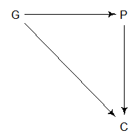
But there are unmeasured effects here, such as the character of the neighborhood.
Grandparents moved into the neighborhood after they finished school,
Parents and children grew up in the neighborhood and are affected by it.
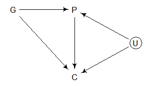
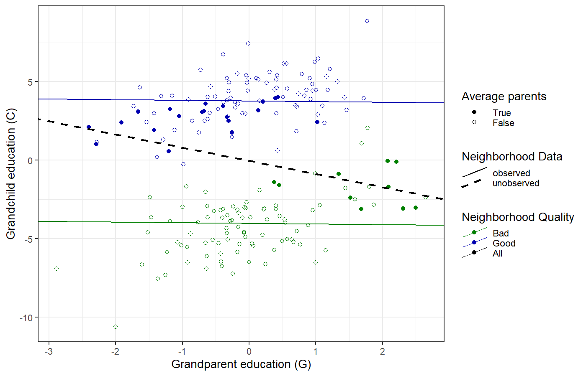
In the age and happiness example, conditioning on the marriage variable created bias,
But in the grandparent, parent, and children example, we needed to condition on the neighborhood to avoid bias.
Consider this DAG:
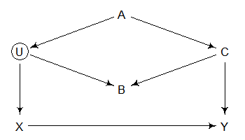
How does X affect Y?
Backdoor paths:
Which backdoor path is open?
Closing backdoors:
Define the DAG
Optionally, draw the DAG diagram
Waffle-House and Divorce
S = state, W = waffle-house restaurants,
A = median age at marriage, M = marriage rate,
and D = divorce rate.
Identify which variables to condition on
Backdoors:
Further analysis: conditional independencies
Everything should be made as simple as possible, but no simpler
— Einstein
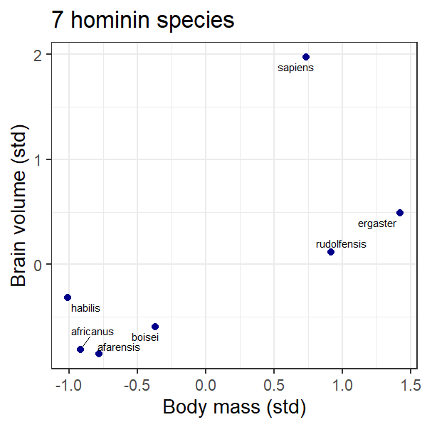
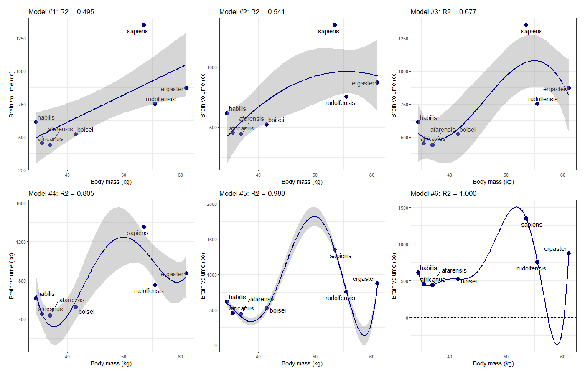
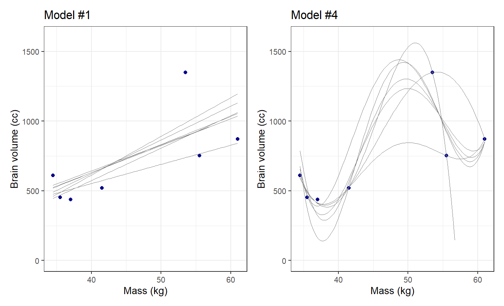
lppd() from the
rethinking package to calculate the log-point
wise-predictive density from a quap model.
lppd(mdl, n = 1E4) will calculate the log of the posterior
probability of the model at 10,000 points. You can then use
sum() to add these up and calculate the entropy \(S(\texttt{mdl})\)
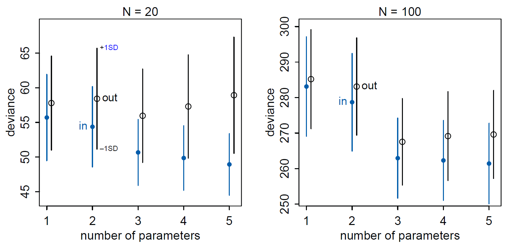
Widely used in Machine Learning
Making the model worse at fitting training data can make it better at predicting test data.
Regularizing prior
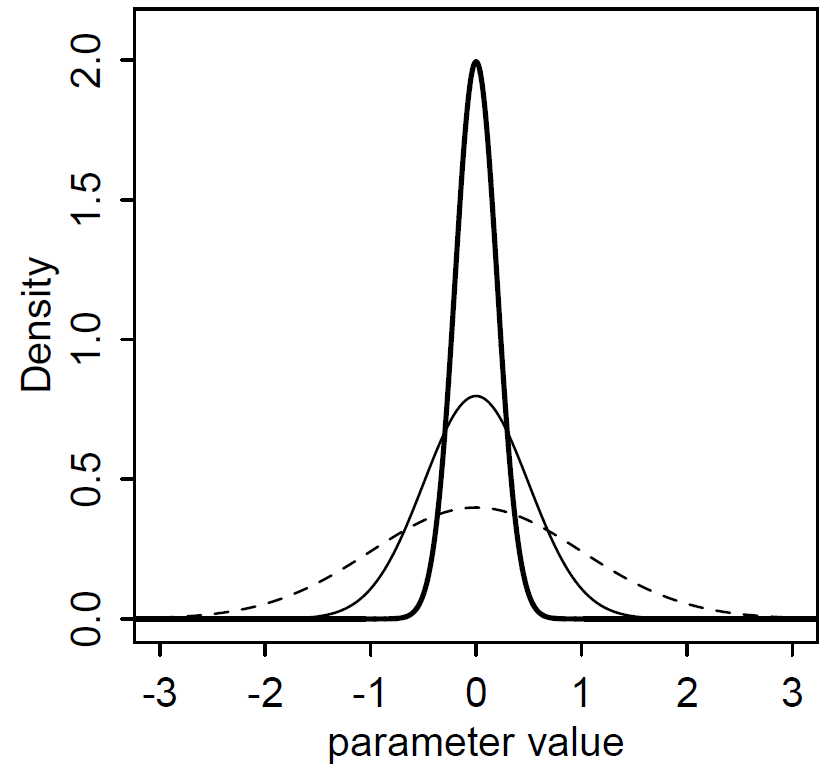
Normal prior for \(\beta\)
parameters:
dashed: Normal(0,1), thin: Normal(0,0.5),
and
thick: Normal(0,0.2).
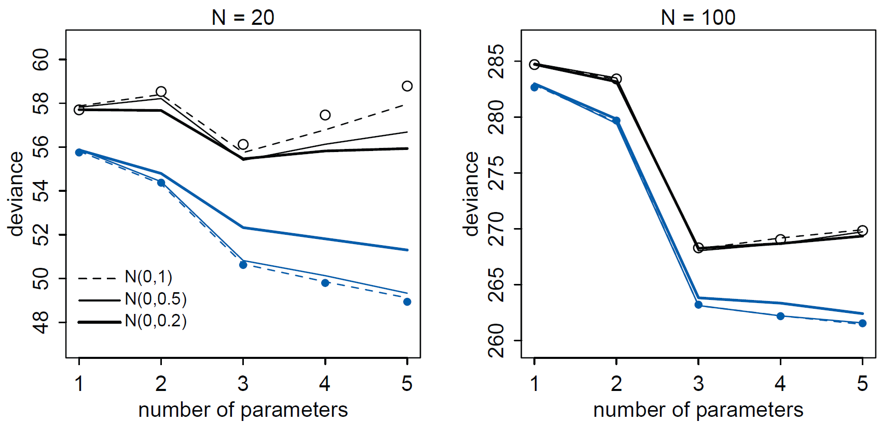
lppd is the
log-pointwise-predictive density (basically a sample of the
posterior).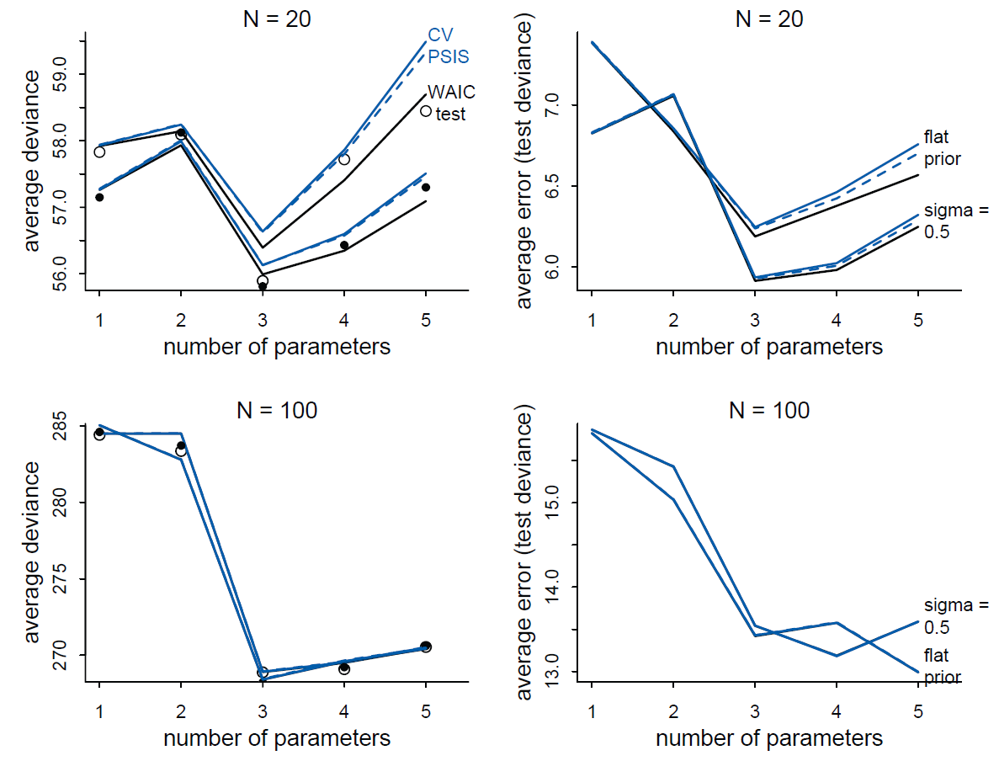
DAG
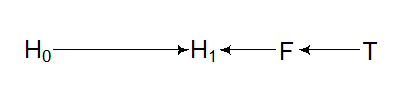
H~0 = height before, H1 = height after, T = anti-fungal treatment, F = fungus
Three models:
## WAIC lppd penalty std_err
## 1 361.45 -177.17 3.55 14.17## WAIC SE dWAIC dSE pWAIC weight
## mdl_TF 361.81 14.26 0.00 NA 3.74 1
## mdl_T 402.65 11.20 40.84 10.44 2.58 0
## mdl_0 405.91 11.65 44.10 12.22 1.58 0DAG
H~0 = height before, H1 = height after, T = anti-fungal treatment, F = fungus
Three models: